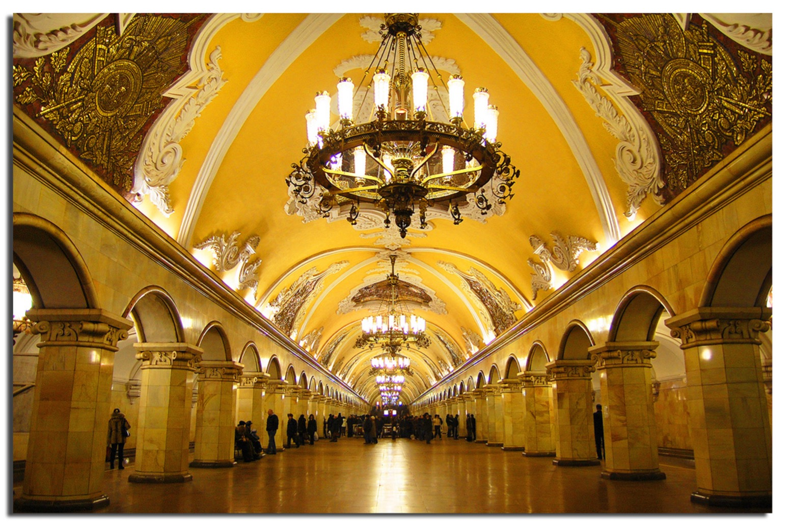
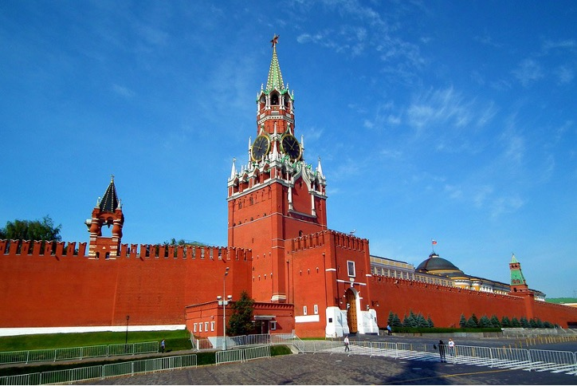

Москва – столица России, город федерального значения, административный центр Центрального федерального округа и центр Московской области, в состав которой не входит. Крупнейший по численности населения город России и её субъект – 13 миллионов человек на 2021 год, самый населённый из городов, полностью расположенных в Европе, занимает 22-е место среди городов мира по численности населения, крупнейший русскоязычный город в мире. Центр Московской городской агломерации. Самый крупный город Европы по площади. А также Москва является популярным туристическим центром России и важнейшим транспортным узлом: город обслуживают 6 аэропортов, 10 железнодорожных вокзалов, 3 речных порта.
Официальный сайт Московского метрополитена
Группа ВКонтакте города Москвы
Официальный сайт Московской городской Думы
Москва была одним из крупнейших городов на Руси, основанный в середине XII века. Москву обычно связывают с Великим князем Юрием Долгоруким, который созвал совет и решил возвести город-крепость на месте древнего поселения. Впервые Москва упоминалась в летописях за 1147 год. Столицей город стал в XVI веке.
Крупное поселение в области современной Москвы появилось задолго до основания города. Археологами было обнаружено несколько кладбищ, относящихся приблизительно к VII веку до н.э. С I тысячелетия н.э. там проживали финно-угорские племена, а славяне появились немного позже. В основном, это были вятичи и кривичи. Название города чаще всего связывают с Москвой-рекой, которую балты либо славяне назвали так от слова моск-, означающего «болото, топь».
Москву не раз осаждали как в Средние века. После смерти сына Ю. Долгорукого город достался его сыну Юрию Всеволодовичу, а затем внуку Владимиру Юрьевичу, который княжил вплоть до монголо-татарского нашествия в XIII веке. В этот период монголо-татары полностью разграбили и сожгли город. Примечательно то, что в летописи упоминаются церкви, монастыри и ближайшие села, что говорит о немалом размахе города. Длительное время Русь находилась под монголо-татарским игом, а русские княжества регулярно выплачивали дань Золотой Орде. Однако это не помешало Московским князьям расширить и возвысить Москву.
Большой вклад в строительство города внес Иван Калита (1288-1340). Именно этот князь построил первые каменные здания: церкви, соборы и крепостные стены. За год до смерти он окружил Московский Кремль новыми укрепленными стенами. Его наследники продолжали укреплять Москву, в особенности Дмитрий Донской (1350-1389). В период его правления город выдержал целый ряд столкновений с соперниками: тверскими князьями, литовским князем Ольгердом, монголо-татарами. Несмотря на то, что он не спас Москву от разорения, во время его княжения Орда потерпела два серьезных поражения.
Его стараниями Москва была признана «отчиной» владимирского стола, то есть резиденцией наследственных князей. С тех пор значение города только росло. В то же время происходил процесс объединения Руси. Суверенным правителем стал Иван III, отказавшийся платить дань Орде. В 1547 году с приходом Ивана IV, более известного как Иван Грозный, Москва стала столицей государства и оставалась ею до 1712 года. Религиозное значение города также росло. После падения Константинополя в середине XV века русская церковь стала развиваться как самостоятельная единица.
На протяжении XVI-XVIII вв. столица переживала немало войн с поляками и татарскими ханами. В 1612 году Москву у поляков отбили войска ополчения Минина и Пожарского. В начале XVIII века по настоянию Петра I столицей государства стал Санкт-Петербург. В этот период столица не раз переносилась из Москвы в Санкт-Петербург и обратно. В 1754 году М. Ломоносов основал крупнейшее учебное заведение России - МГУ. Во время Отечественной войны 1812 году город был оккупирован французскими войсками и разрушен от пожара. В послевоенные годы проводились восстановительные работы, был возведен знаменитый Храм Христа Спасителя. Столичный статус Москве вернули в 1918 году, сразу после образования РСФСР.
| Фотография | Описание |
|---|---|
Храм Василия Блаженного |
Собор Покрова Пресвятой Богородицы на Рву (храм Василия Блаженного) — один из самых значимых памятников древнерусской архитектуры XVI в. Собор был возведен в 1555–1561 гг. по велению царя Ивана Грозного в честь покорения Казанского царства. Центральная церковь освящена во имя Покрова Пресвятой Богородицы. |

Московский Метрополитен |
Московский метрополитен — это настоящий подземный памятник архитектуры мирового значения. Стройка шла под девизом «Создадим дворец для народа!». Многие станции московского метро больше напоминают величественные музейные залы. Оно входит в пятерку метрополитенов всего мира по загруженности и протяженности. |

Московский Кремль |
Московский Кремль — градообразующий, исторический, политический и культовый центр города. Сегодня здесь находится официальная резиденция президента России. В 1991 на базе Государственных музеев Московского Кремля был образован историко-культурный музей-заповедник. |
Красная площадь |
Красная площадь - один из символов Москвы на протяжении многих веков. Расположена она у северо-восточной стены Московского кремля, имеет форму прямоугольника со сторонами 75 и 330 м. В давние времена здесь располагались торговые ряды, на Лобном месте оглашались важные государственные новости, совершались казни. |
Большой театр |
Большой театр – один из символов России, блестящего мастерства ее артистов. Более 800 произведений было поставлено на его сцене. Это мировые оперы таких знаменитостей как Верди и Вагнер, Берлиоз и Равель, Чайковский, Рахманинов, Прокофьев, Аренский и другие композиторов. |
Исполнитель: Дмитрий Александрович Хворостовский
Я по свету немало хаживал Жил в землянке, в окопах, в тайге Похоронен был дважды заживо Знал разлуку, любил в тоске Но Москвой я привык гордиться И везде повторял я слова Дорогая моя столица Золотая моя Москва!
Я люблю подмосковные рощи И мосты над твоею рекой Я люблю твою Красную Площадь И кремлёвских курантов бой В городах и далёких станицах О тебе не умолкнет молва Дорогая моя столица Золотая моя Москва!
Мы запомним суровую осень Скрежет танков и отблеск штыков И в веках будут жить двадцать восемь Самых храбрых твоих сынов
И врагу никогда не добиться Чтоб склонилась твоя голова Дорогая моя столица Золотая моя Москва! Дорогая моя столица Золотая моя Москва
Видеоклип с исполнением гимна города Москвы
Музыкальное исполнение Иосифа Кобзона гимна города Москвы

Текущее время: .